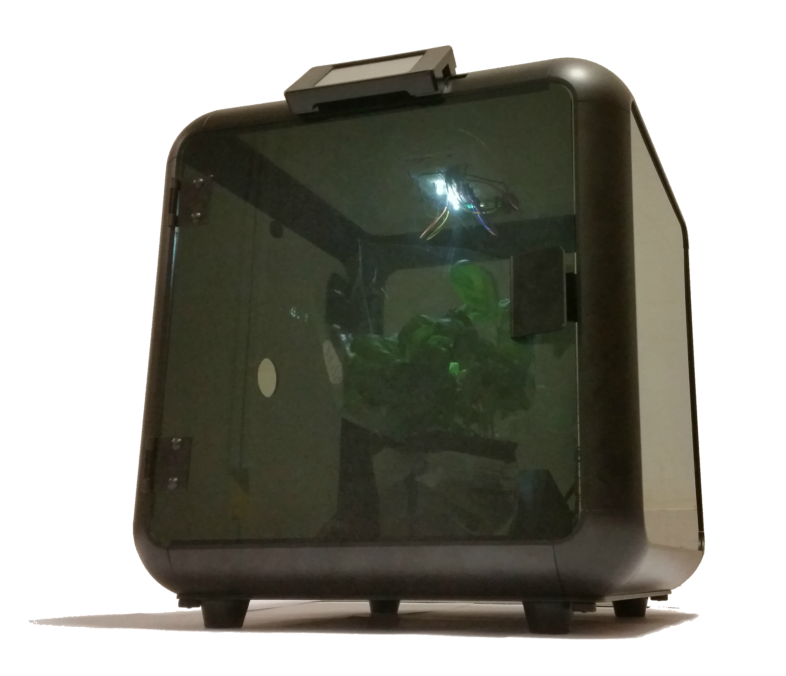
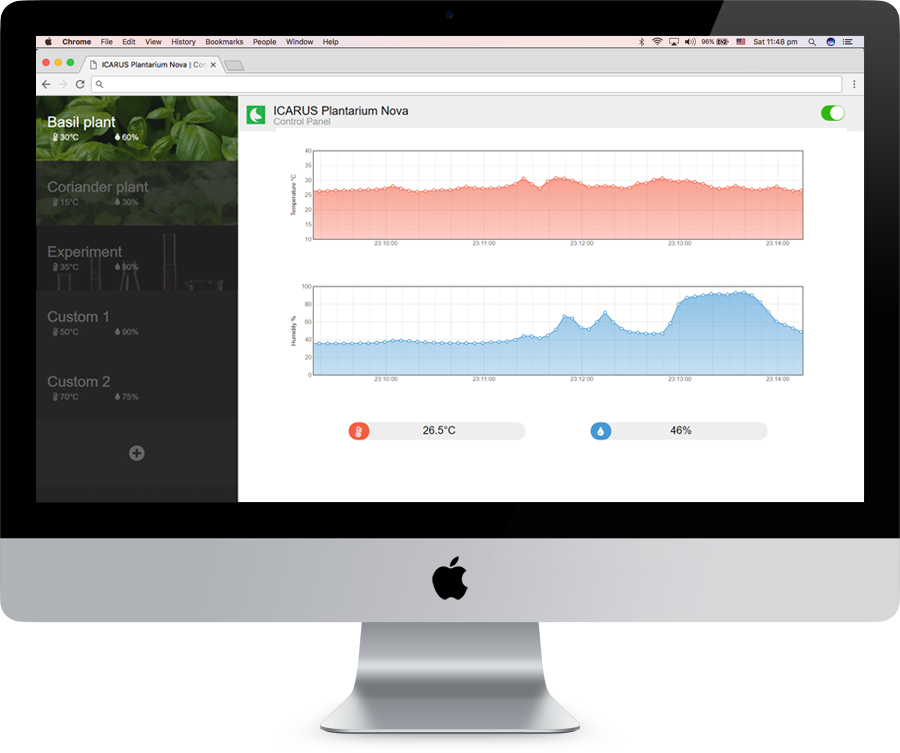

ICARUS is a team of 3 talented Electronic and Information Engineering students from Imperial College London. The Plantarium Nova Project was created as a part of our coursework submission for Embedded Systems, a course module in the Electrical and Electronic Engineering Department at Imperial College London. The course is run by Prof E Stott.
A Revolution in
Indoor Botany
Plantarium Nova enables you to grow any plant in a precisely controlled user-settable environment. Control temperature and humiditity to grow your plant perfectly. No more wilting and dying plants!

Cloud-based Real-time
Web Control Interface
Control your Plantarium Nova, from anywhere in the world! Connect the device to your WiFi network, link it to our intutive web interface, and monitor your plant from another room, at work or on holiday - in real time! You can trust your Plantarium Nova to take take of your plants for you.

Grow Plants using
Custom Profiles
Select from a massive library of tested plant profiles and let your Plantarium Nova do the rest! But if you want to have more control, you can easily create custom profiles for not only rare plants, but for other projects too! Upload your profiles to the Cloud and share them with other users! Download recommended and user-submitted profiles to try out for yourself!

Cloud Service
By using the Cloud, the Plantarium Nova is able to communicate with your devices, both mobile and non-mobile. Anything you own with Internet access will be able to monitor and control the Plantarium Nova. Link your device to your account and sign in to view how your plant is doing! Any failures or errors will be sent to your device of choice through the Cloud, meaning that you always have peace of mind.
Temperature Control
Temperature is a very important factor to plant growth. If it is too high or too low, the plant may die. The Plantarium Nova conatins a TMP007 thermopile temperature sensor and a heater (not yet available) and utilises a control loop to keep the enclosure at the temperature you specify. Operating temperatures range from 5°C to 60°C.
Humiditity Control
Some plants require humidity levels higher or lower than that of your home. To enable you to grow exotic plants, the Plantarium Nova contains a AM2302 DHT22 humidity sensor and a humidifier. Refilling the water needed for the humidifier is also simple. Simply refill the water bottle from a tap, screw it back in and it is ready to go again. Operating humidity levels range from 10% to 90%
Infinite Possibilities
with Expandable Accessories
With future firmware updates and our modular design, we can add new features and sensors. A light sensor and controller would be the next feature, with the potential for so much more! Soil sensors, automatic watering, you name it! All you have to do is plug in your laptop, update the firmware and plug in your new accessory!